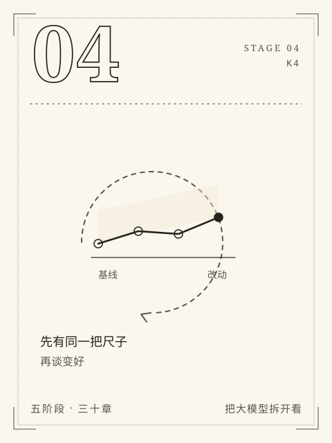

阶段 4 / K4
S4 会改进
先有尺子，再谈变好。
先冻结评测再诊断改进，并真实训练、保存和适配微型因果模型。
“换个参数试试”很容易，“知道它是否真的变好”很难。这一阶段先把材料、题目、判据和预算冻结，再让每次改动只动一个因素。检索、上下文、Agent、成本、训练与蒸馏，都要在同一把尺子下比较。
九章里有真实的评测、真实的训练和真实的失败。你会看到小样本的置信区间有多宽，也会看到一次损失下降不等于模型学会了任务。改进的反面不是不变，而是不知道为什么变。
本阶段章节
- C18先定怎样评，再动手优化
在改动之前冻结材料、题目、判据和预算，让“变好”有同一把尺子。
- C19检索没找对，还是回答没用对
沿检索、生成、引用三道边界，定位一个错误答案到底坏在哪一步。
- C20长上下文与记忆不是无限仓库
分清本次上下文、KV 缓存、外部记忆和模型参数，算清长上下文的真实代价。
- C21什么时候需要 Agent
用固定流程与有限 Agent 对照，判断多给模型几次决策权是否值得。
- C22质量、延迟和费用怎么取舍
把质量、延迟和费用放在同一张表上，用分位数和失败解释做取舍。
- C23从数组走到自动微分
从数组、形状、批次到自动微分，补上训练小模型所需的地基。
- C24从零组装最小 decoder
从零组装一个真正的 causal decoder，跑通训练、保存、重载和逐步生成。
- C25何时适配参数，何时不该训练
判断什么时候该改参数，比较全量 SFT 与冻结底座的 LoRA 各自改变了什么。
- C26蒸馏学到的是什么
分清分布蒸馏、文本蒸馏和错误继承，理解学生究竟从教师那里学到了什么。